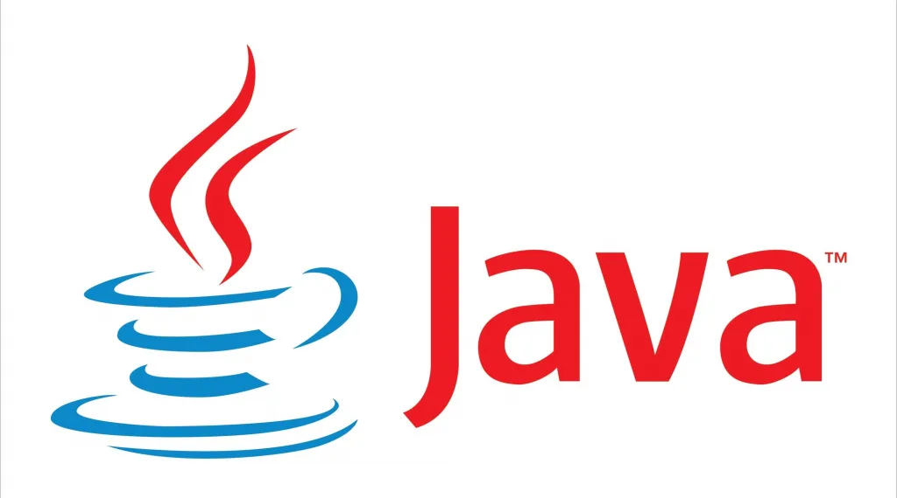

HTML
HTML (o HyperText Markup Language) es el codigo utilizado para la creacion de esta web. HTML es el lenguaje que le dice a la web que tiene que mostrar, cuando vas a abrir una web tu navegador lee el HTML y reproduce lo que pone.

CSS
CSS (o Cascading Style Sheets) es el maquillaje de la web creada por el HTML, esto significa que es el lenguaje destinado a darle color a los botones, a decidir el tamaño del header, body y footer, de definir el formato del texto, etc...

Python
Python es un lenguaje de programacion de alto nivel, la mayor preocupacion de los desarolladores de Python era que fuera comprensible por todas las personas.

C++
C++ es un lenguaje de programacion que se creo como evolucion del lenguaje anteriormente creado por la misma empresa (c), la razon de esta mejora fue la intencion de hacer que este lenguaje este orientado a objetos.
Java
Java es uno de los lenguajes de programacion más utilizados, este esta enfocado en la programacion de objetos que se ejecuta en millones de dispositivos a lo largo y ancho del globo, lo especial de Java es que puede ser ejecutado en diferentes sistemas operativos.
